Pokemon Trainers
Pokemon Trainers are people in the Pokemon world who dedicate themselves to training Pokemon for battle against other trainers, in the hopes of becoming a Pokemon Master. In the Pokemon world, many children as young as 10 years old embark on their journeys to become “Pokemon Masters.” Though many children train Pokemon, with even some attending school for training Pokemon or choosing to journey instead of going to school, not all Pokemon trainers continue training into adulthood.
For those that do continue training into adulthood, some are able to participate in the Pokemon League as gym leaders and the Elite 4. These trainers tend to have a specific type that they specialize in, and they are known to have very strong teams that are made up of mostly that type of Pokemon. An exception to this format is in Alola, where there are no gym leaders, and Galar, where there is no specific Elite 4. In Alola, instead of gyms, there are “island kahunas” which serve as the leader in that specific island, who help interface with the island's strong “totem Pokemon.” In Galar, instead of an Elite 4, a contest is held where any person who completed the gym challenge is allowed to compete for the title of champion - including the gym leaders! Just like in our world, the Pokemon world features different cultures.
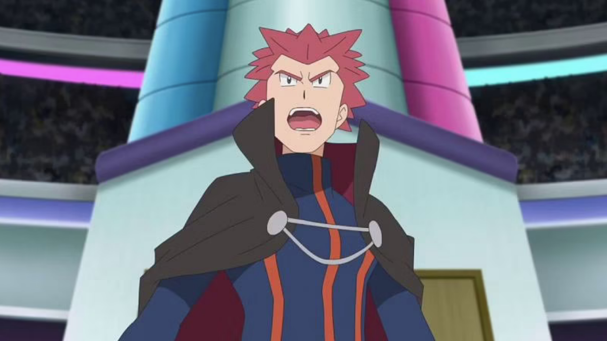
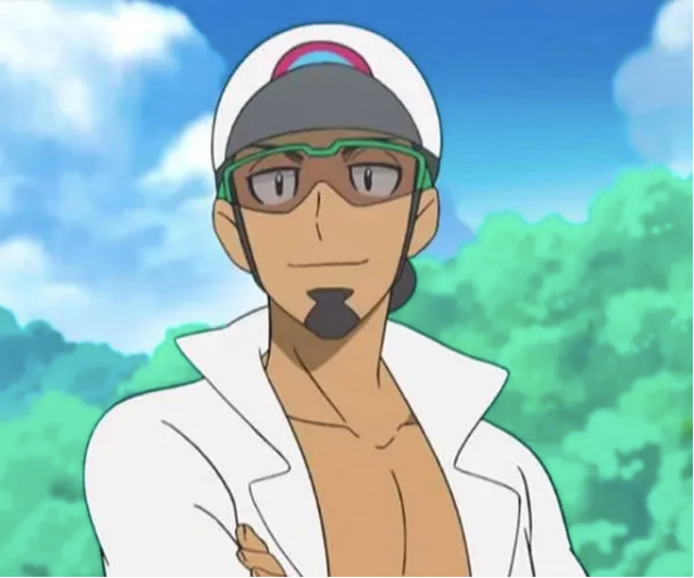
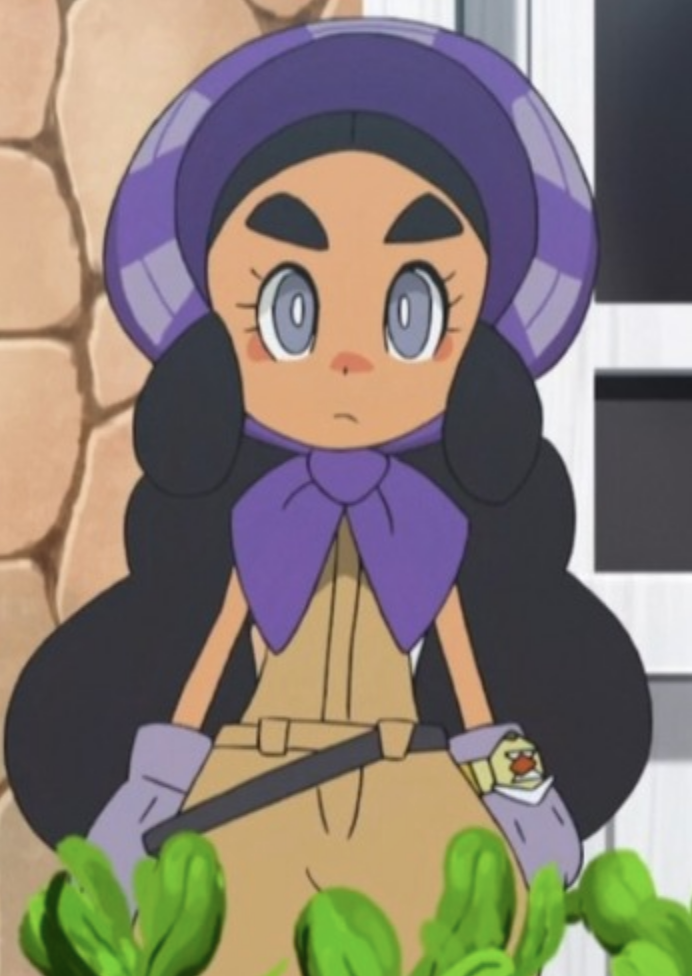
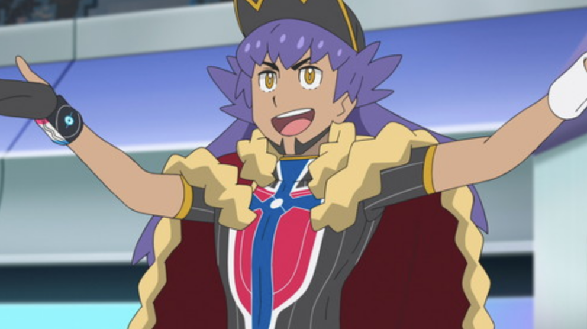
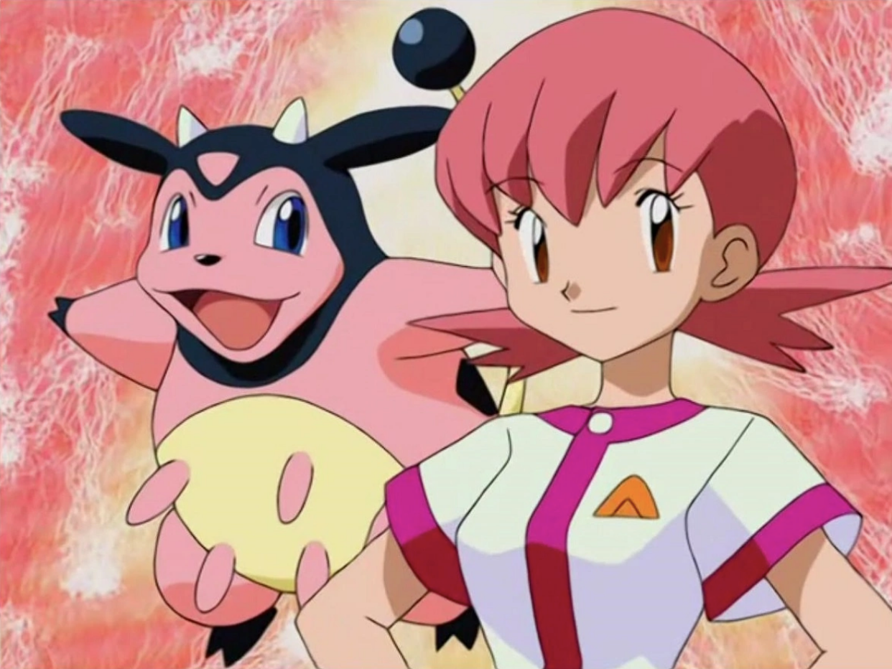
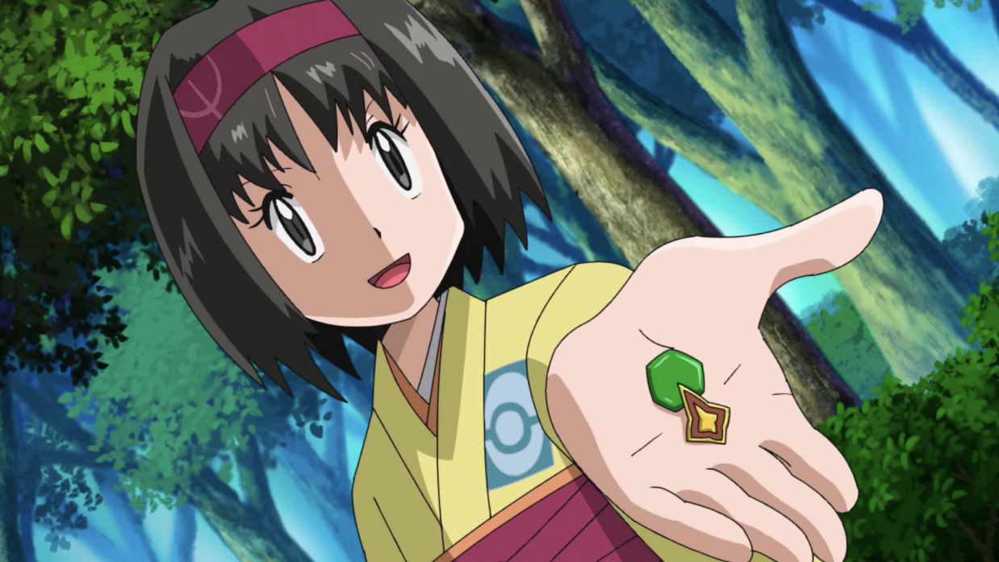
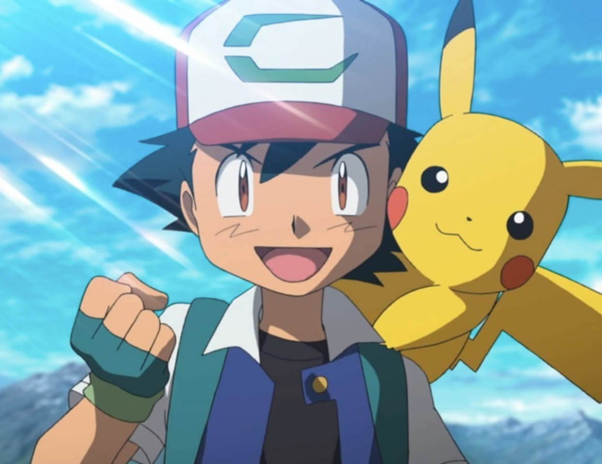
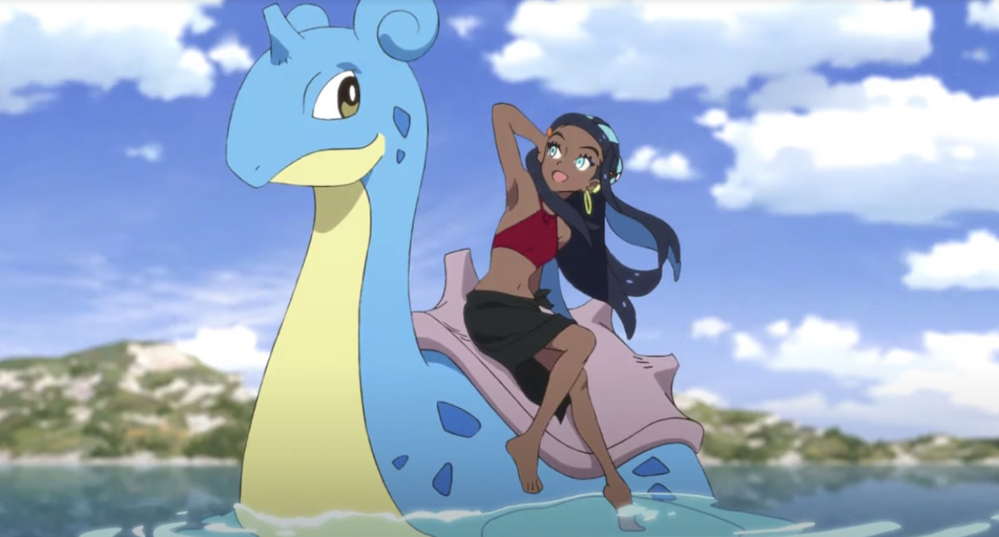
 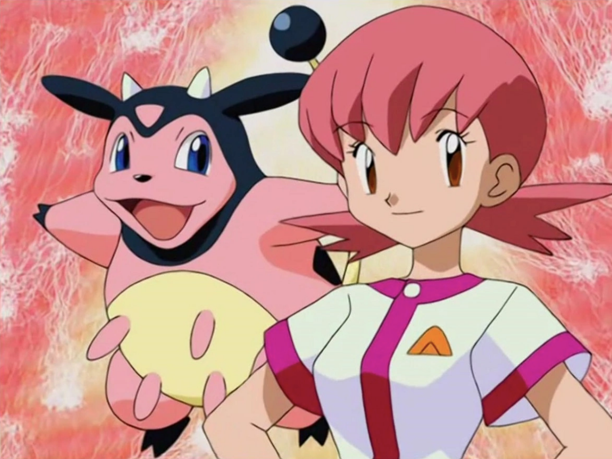
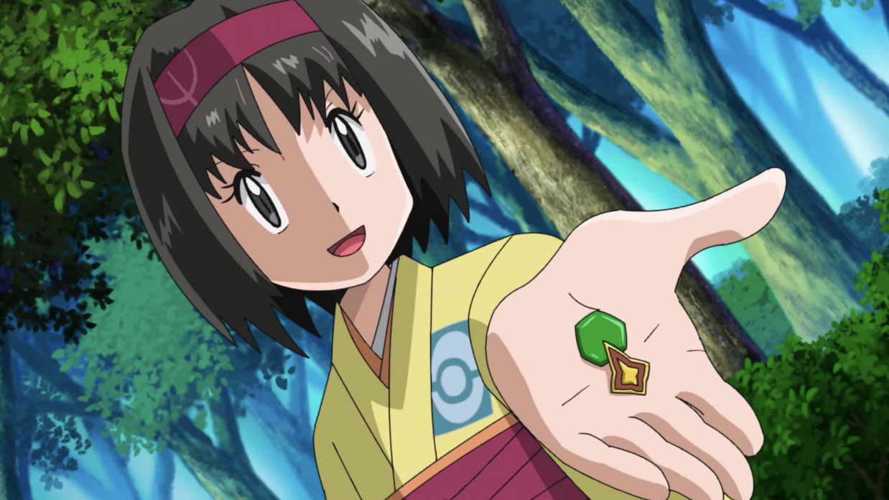
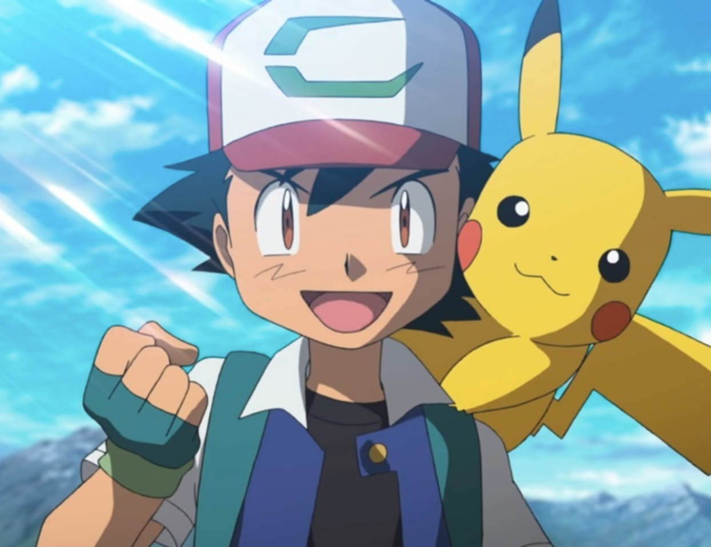
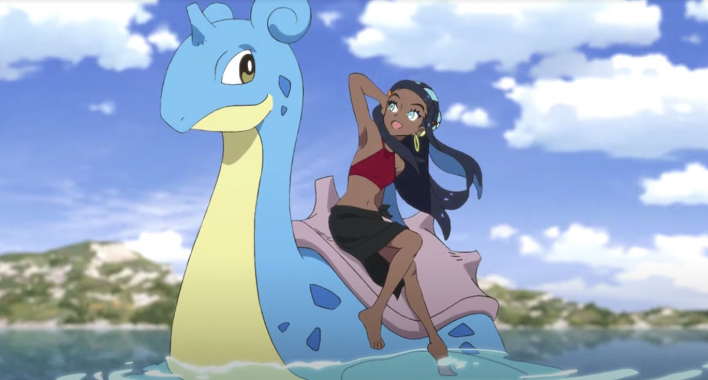
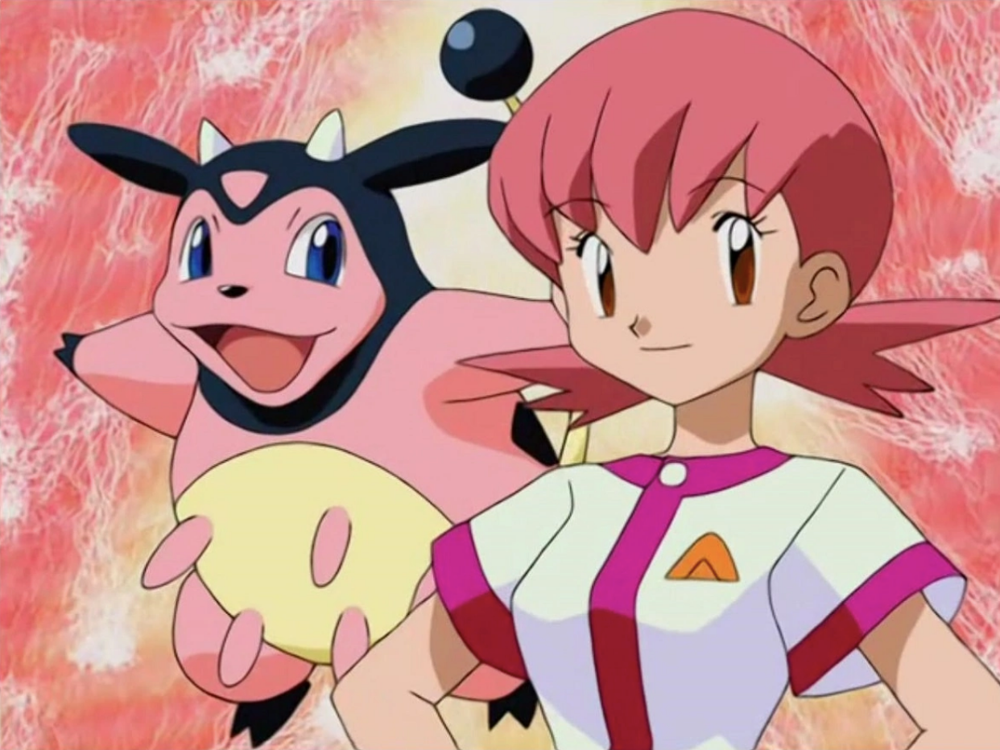
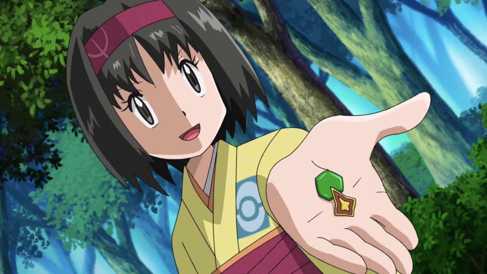
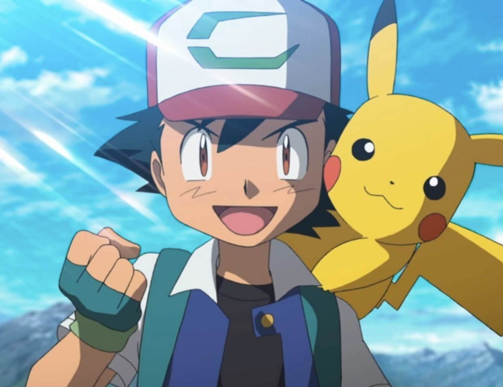
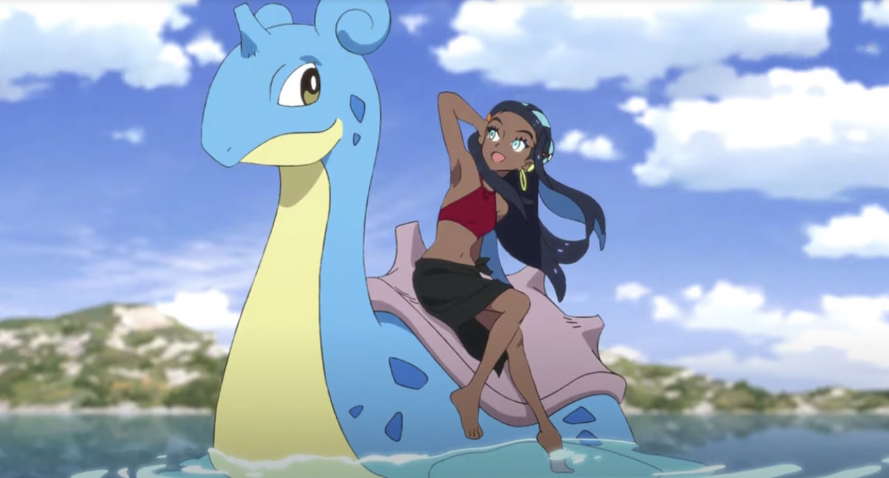